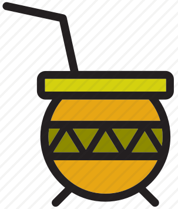

<div>

<mat-toolbar color="primary">
<!-- <button id="home-button" mat-button routerLink="/">
</button> -->
<a routerLink="/"></a>

<span id="title"  routerLink="/">MateShop</span>    

<button mat-button routerLink="/shopping">
    <mat-icon>shopping_cart</mat-icon>
    Shopping
</button>

<button mat-button routerLink="/messages">
    <mat-icon>feedback</mat-icon>
    Forum</button>
<span class="nav-spacer"></span>
        
<button mat-icon-button [matMenuTriggerFor]="menu" aria-label="Example icon-button with a menu">
    <mat-icon>more_vert</mat-icon>
    </button>
    <mat-menu #menu="matMenu">
    <button mat-menu-item routerLink="/login">
        <mat-icon>arrow_right</mat-icon>
            <span>Login/Register</span></button>   
    
    <button mat-menu-item routerLink="/profile">
        <mat-icon>account_circle</mat-icon>
        <span>Profile</span>
    </button>
    </mat-menu> 

<button (click)="showFlags()" mat-icon-button matBadge="{{notificationCount}}" matBadgePosition="before" matBadgeColor="accent"  [matBadgeHidden]="notificationCount == 0">
        <mat-icon>flag</mat-icon>
</button>
</mat-toolbar>

<router-outlet></router-outlet>

</div>